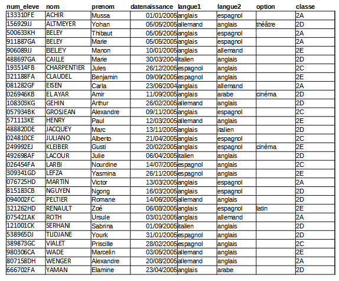

TP du Cnam sur les requêtes sql
Un TP en ligne avec correction est proposé par le CNAM et vous permet de vous entraîner sur 4 jeux de données: http://deptfod.cnam.fr/bd/tp.
La base de données films a été importée sur https://apps.lyceum.fr/sqlite.
Enquête en ligne (et en anglais)
Résolvez l’enquête du meurtre de SQL City. Pour accéder à cette enquête, il existe diverses possibilités:
- Version interactive en
html: http://mystery.knightlab.com - Fichiers dont la base de données sqlite sur github: https://github.com/NUKnightLab/sql-mysteries
- Version interactive sur repl.it: https://repl.it/@ToniScullion1/Silver-TASK-2-SQL-Murder-Mystery#actvity.md
Mini-projet: application web avec base de données sqlite
Le dépôt git suivant contient une mini-application web utilisant python pour accéder aux données d’une base de données sqlite.
https://framagit.org/lyceum/flask-sqlite
Par groupe de 2 ou 3, développez l’ébauche d’application proposée pour qu’elle utilise des données intéressantes de votre choix mais non personnelles.
Outre le changement de données, vous pourrez:
- utiliser plusieurs relations dans votre base de données, et les joindre dans vos requêtes.
- proposer plusieurs pages
htmlpour la visualisation de données différentes, leur édition…
Exercice type BAC
Cet exercice est issu du sujet zéro.
L’énoncé de cet exercice utilise les mots du langage SQL suivant :
SELECT, FROM, WHERE, JOIN, INSERT INTO, VALUES, COUNT, ORDER BY.
Dans un lycée imaginaire, les données relatives aux élèves de secondes sont regroupées dans un fichier nommé seconde_lyc.csv. Un extrait de son contenu est représenté figure 1.

Pour les besoins de l’organisation du lycée, le chef d’établissement exploite la base de données par des requêtes en langage SQL. Il a pour cela créé une table (ou relation) SQL dénommée seconde dans son système de gestion de bases de données dont la structure est la suivante :
+--------------------------+
| seconde |
+==========================+
| num_eleve(clef primaire) |
+--------------------------+
| langue1 |
+--------------------------+
| langue2 |
+--------------------------+
| option |
+--------------------------+
| classe |
+--------------------------+
L’attribut num_eleve est un entier, les autres sont des chaines de caractère (le type CHAR).
Dans le modèle relationnel, quel est l’intérêt de l’attribut
num_eleve.Écrire une requête SQL d’insertion permettant d’enregistrer l’élève
ACHIR Mussadans la table seconde. Les informations relatives à cet élève sont données dans la ligne 1 du fichierseconde_lyc.csv.Lors de l’insertion de l’élève
ALTMEYER Yohan(ligne 2 du fichierseconde_lyc.csv), une erreur de saisie a été commise sur la première langue, qui devrait être allemand. Écrire une requête SQL de mise à jour corrigeant les données de cet élève.
On suppose maintenant que la table seconde contient les informations issues de la figure 1 (ni plus, ni moins, même si la figure 1 n’est qu’un extrait du fichier
seconde_lyc.csv).Quel est le résultat de la requête suivante?
SELECT num_eleve FROM seconde;
On rappelle qu’en
SQL, la fonction d’agrégationCOUNT()permet de compter le nombre d’enregistrements dans une table. Quel est le résultat de la requête suivante?SELECT COUNT(num_eleve) FROM seconde;
Écrire la requête permettant de connaître le nombre d’élèves qui font allemand en
langue1oulangue2.
Le chef d’établissement souhaite faire évoluer la structure de sa base de données. Pour ce faire, il créé une nouvelle table eleve dont la structure est la suivante:
+-------------------------------------+ | eleve | +=====================================+ | num_eleve (clef primaire, | +-------------------------------------+ | clef étrangère de la table seconde) | +-------------------------------------+ | nom | +-------------------------------------+ | prenom | +-------------------------------------+ | datenaissance | +-------------------------------------+
Là encore, l’attribut num_eleve est un entier, les autres sont des chaines de caractère (le type CHAR).
Expliquer ce qu’apporte l’information
clef étrangèrepour l’attributnum_elevede cette table en termes d’intégrité et de cohérence.On suppose la table
elevecorrectement créée et complétée. Le chef d’établissement aimerait lister les élèves (nom, prénom, date de naissance) de la classe2A.Écrire la commande qui permet d’établir cette liste à l’aide d’une jointure entre
eleveetseconde.Proposer la structure d’une table
coordonneesdans laquelle on pourra indiquer, pour chaque élève, son adresse, son code postal, sa ville, son adresse mail. Préciser la clef primaire et/ou la clé étrangère en vue de la mise en relation avec les autres tables.